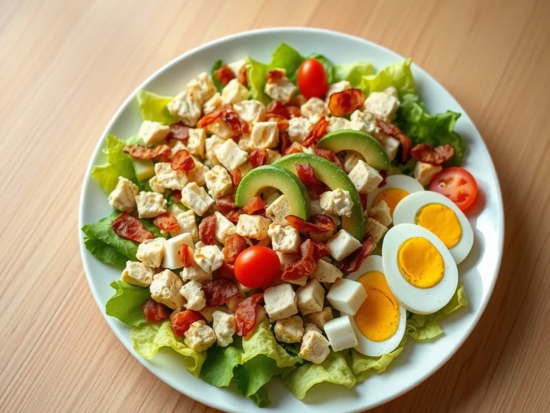

Фото: Иллюстрация ИИ, Cloudflare Workers AI
Салат Кобб с курицей, беконом и авокадо
Американский салат-ужин из курицы, бекона, яиц, авокадо и помидоров
30 мин3 порц.604 ккал на порциюБ 43 · Ж 45 · У 10Американская кухня
Продукты на 3 порц.
- Куриное филе300 г
- Бекон100 г
- Яйцо куриное2 шт
- Авокадо1 шт
- Помидоры2 шт
- Салат листовой150 г
- Сыр твёрдый50 г
- Оливковое масло2 ст. л.
- Уксус 9%2 ч. л.
- Горчица1 ч. л.
- Соль0,5 ч. л.
Как готовить
- Отварите яйца 10 минут, остудите и нарежьте четвертинками.
- Обжарьте бекон на сухой сковороде на среднем огне 4-5 минут до хруста, переложите на бумажное полотенце.
- В том же жире обжарьте посоленное куриное филе по 5-6 минут с каждой стороны, пока сок при проколе не станет прозрачным. Дайте отдохнуть 3 минуты и нарежьте кубиками.
- Нарежьте помидоры и авокадо кубиками, сыр мелкими кубиками, бекон раскрошите. Листья салата порвите руками.
- Взбейте вилкой масло, уксус, горчицу и щепотку соли. Выложите салат на блюдо, сверху полосками курицу, бекон, яйца, авокадо, помидоры и сыр, полейте заправкой.
Совет. Авокадо нарезайте в последнюю очередь, чтобы не потемнело. Голубой сыр в оригинале можно заменить любым твёрдым.